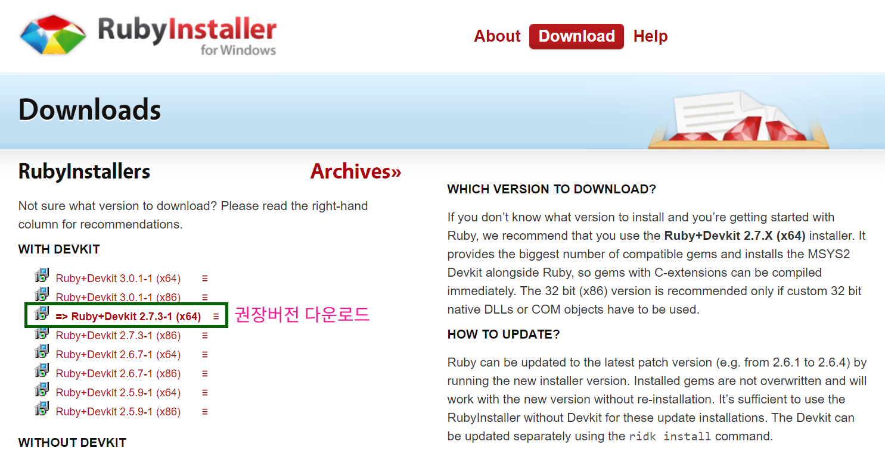
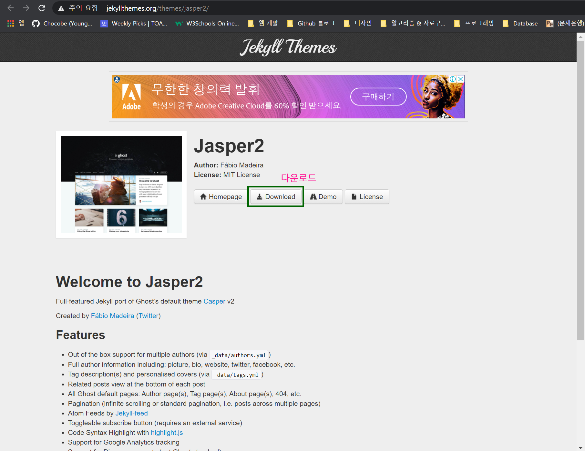
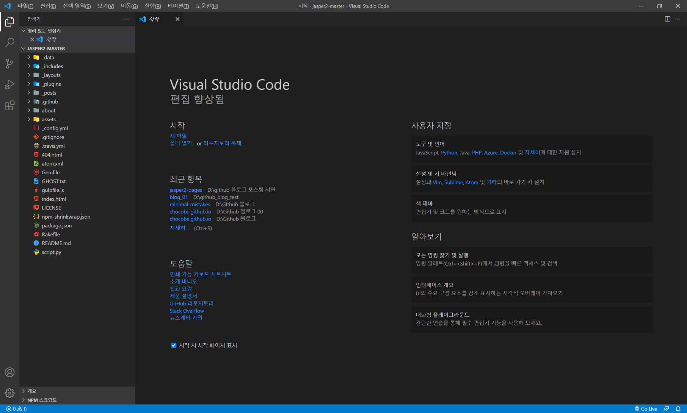
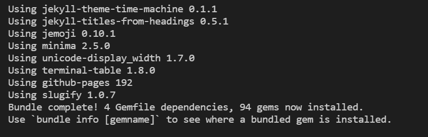
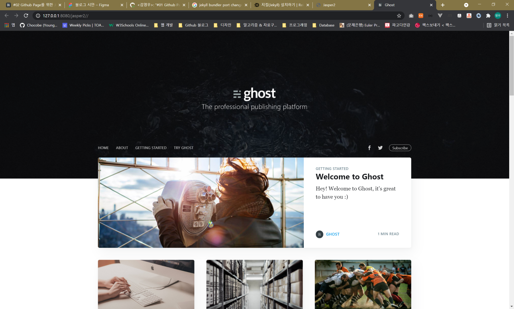

#02 Github Page를 위한 Jekyll 환경구축
Github Page 구축을 편하게 하기 위한 정적 홈페이지 생성기인 Jekyll을 설치해 보겠습니다.
우리가 만들고 운영할 블로그는 정보공유와 기록을 목적으로 하므로 디자인이 중요치 않다(😱)고 생각할 수도 있습니다.
하지만 매일 보고, 만들고, 관리할 내 블로그가 보기 불편하게 만들어 졌다면, 볼때마다 스트레스가 될 것 같습니다.
우리가 사용할 Jekyll 은 Theme 라는 무료 템플릿을 사용할 수 있습니다.
Jekyll Theme http://jekyllthemes.org/
레이아웃, 디자인을 템플릿으로 사용할 수 있고, 우리는 설정과 수정만으로 블로그를 만들 수 있습니다.
이러한 이유로 Jekyll을 사용하는 것이고, 다음과 같은 요소를 설치해 보겠습니다.
Ruby설치bundler설치Jekyll Theme다운로드 - Jasper2gem설치로컬서버실행
01) Ruby 다운로드 및 설치
Jekyll은 Ruby로 만들어 졌기 때문에, 우리가 Jekyll 을 로컬에서 사용하기 위해서는 Ruby를 설치해야 합니다.
먼저 Ruby 공식 홈페이지에서 OS에 맞는 설치파일을 다운로드 받고 설치 합니다.

02) bundler 설치
Ruby 에서는 라이브러리 또는 페키지를 gem 이라고 부릅니다.
Jekyll Theme을 빌드하기 위한 도구로 bundler 가 필요하며, 터미널(cmd) 로 설치할 수 있습니다.
bundler 설치를 위해 터미널(cmd) 에 다음 명령어를 실행 시킵니다.
$ gem install bundler
03) Jekyll Theme 다운로드 - Jasper2
Jekyll Theme 들은 설정이 모두 다릅니다.
홈페이지 구축까지 시도해본 Jekyll Theme는 Jasper2 뿐이므로, Jasper2를 다운로드 받겠습니다.
Google에서 jekyll jasper2를 검색하면, 다운로드 페이지를 찾을 수 있습니다.

다운로드한 Jekyll Theme가 우리의 블로그가 됩니다.
04) gem 설치
Jekyll은 Ruby로 만들어졌기 때문에, 의존성 파일도 gem 으로 구성되어 있습니다.
원하는 IDE를 사용하여 다운로드한 Jekyll Theme를 엽니다.

프로젝트가 열리면, 터미널을 열고 다음 명령을 실행하여, gem을 설치 합니다.
$ bundle install

설치가 완료 되었다면, 다음과 같은 메시지를 볼 수 있습니다.

05) 로컬서버 실행
이제 우리의 프로젝트를 실행할 준비가 완료 되었습니다.
터미널에 다음 명령으로 로컬서버를 실행 합니다.
$ bundle exec jekyll s
기본 port는 4000번 이며, 변경할 경우, --port 번호 옵션을 설정하여 실행 합니다.
$ bundle exec jekyll s --port 8080
로컬서버를 실행하면, 우리의 블로그를 볼 수 있습니다.

이로써 우리의 블로그가 만들어 졌습니다.
다음 포스팅 부터는 블로그의 세부설정에 대해 알아보겠습니다.
Github Page 전체 목차 입니다.
- #01 Github Page 포스팅 개요
- #02 Github Page를 위한 Jekyll 환경구축
- #03 사이트 설정 (_config.yml)
- #04 작성자(저자) 설정 (authors.yml)
- #05 태그 설정 (tags.yml)